#92 / #98 Boss 波次离屏回放
直接从正式工厂建立指定波次：铁桶第10波、三级武器；王冠第19波、五级武器。第一关、普通难度、五级堡垒，齐射2/射速2/弹宽1，无宠物或士兵。没有修改敌人入场、血量、位置、伤害或奖励；这些为明确的测试初始装备，并非第一波开始的存档通关。30fps，DPR 1；视频从计划Boss到达前2秒开始，后台模拟从该波开始。不是微信、真机、音频或性能验收。
装备、事件、逐秒状态、资源与视频哈希
phone · iron
视频40.33秒，起点模拟12.95秒，最终cleared，堡垒生命1928。观察阶段：normal, warning, charging, attackingBase。
阶段首次出现的截图
phone-iron-normal.png
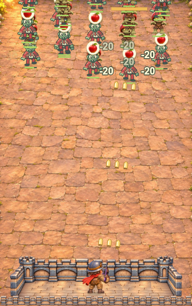
phone-iron-warning.png
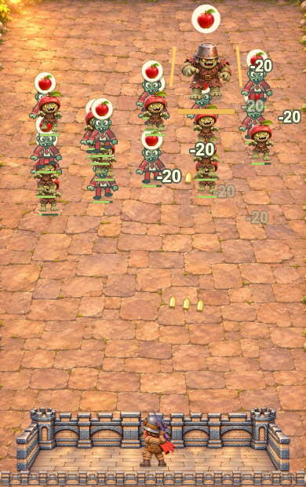
phone-iron-charging.png
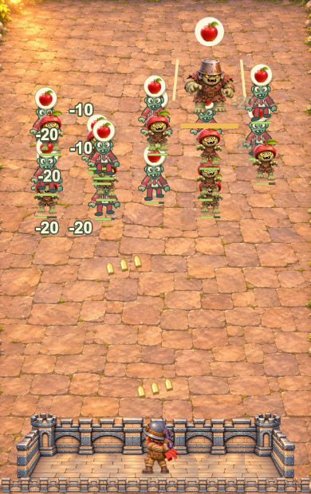
phone-iron-attackingBase.png
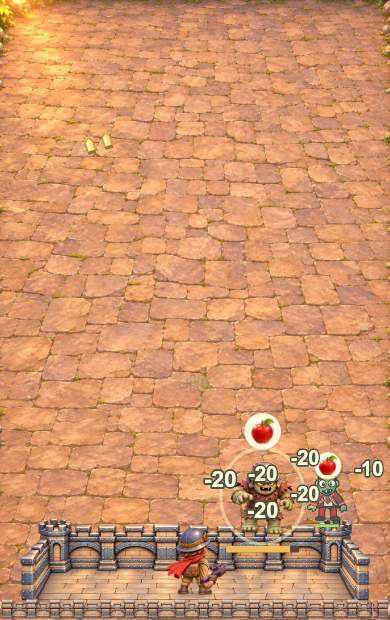
ipad · iron
视频45.60秒，起点模拟12.95秒，最终cleared，堡垒生命1742。观察阶段：normal, warning, charging, attackingBase。
阶段首次出现的截图
ipad-iron-normal.png
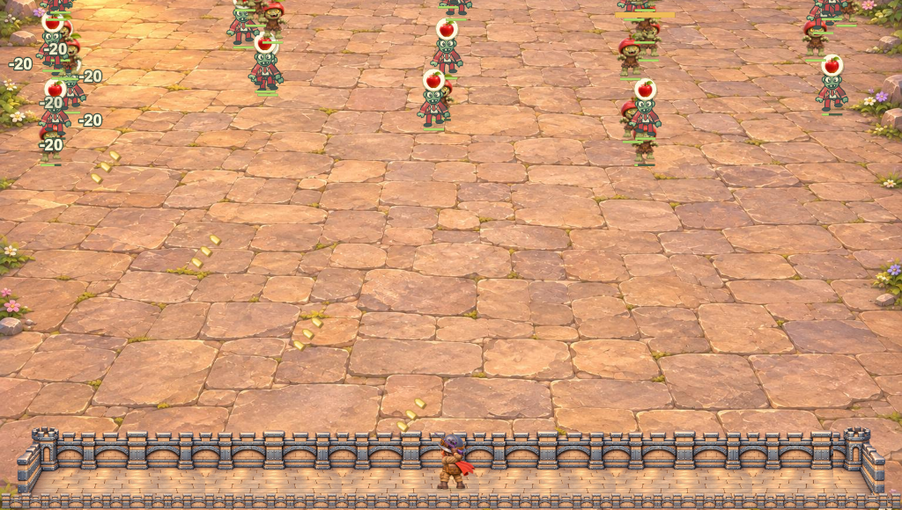
ipad-iron-warning.png
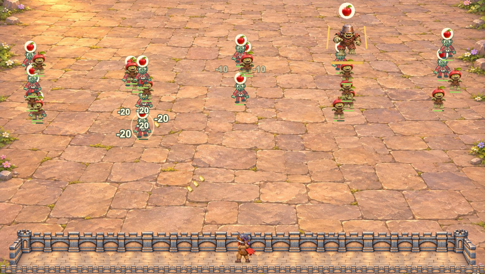
ipad-iron-charging.png
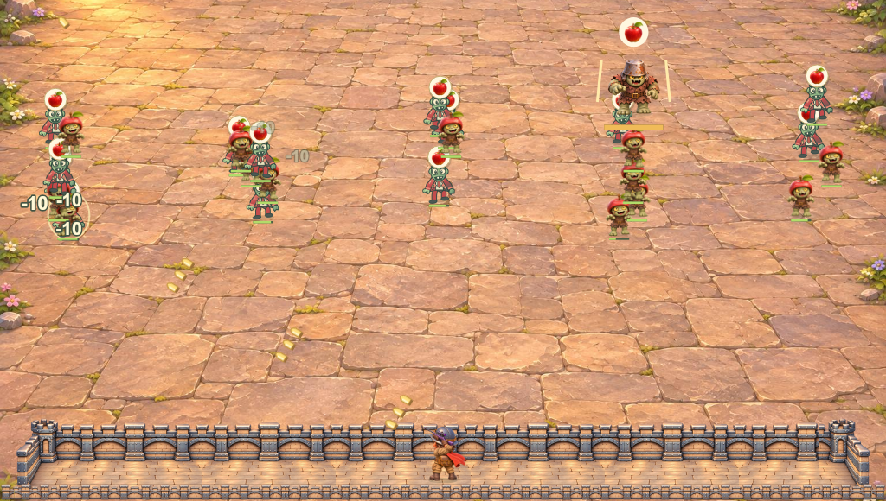
ipad-iron-attackingBase.png
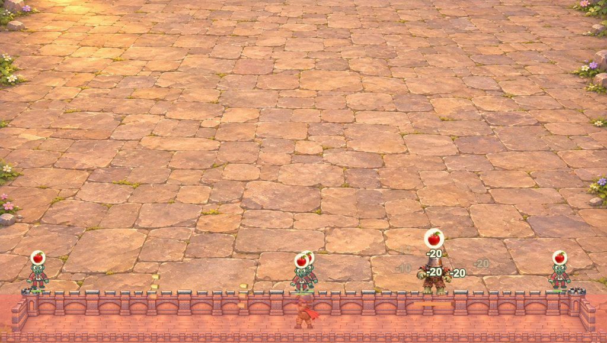
phone · grand
视频51.03秒，起点模拟26.75秒，最终cleared，堡垒生命1363。观察阶段：walking, winding, shockwave, attackingBase。
阶段首次出现的截图
phone-grand-walking.png
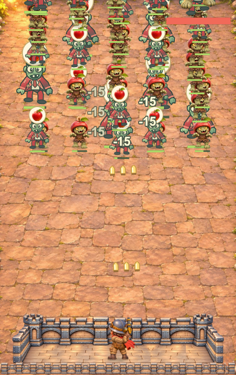
phone-grand-winding.png
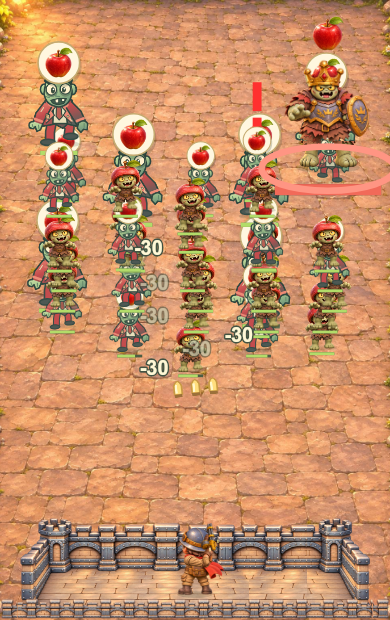
phone-grand-shockwave.png
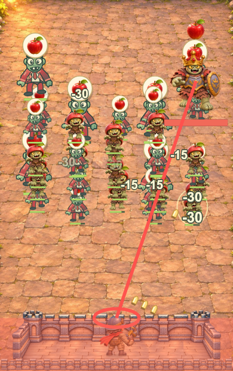
phone-grand-attackingBase.png
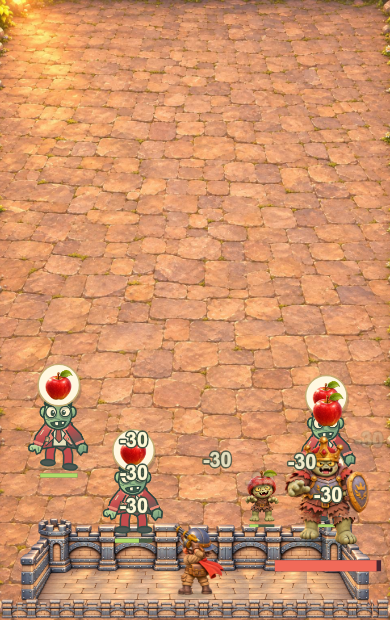
ipad · grand
视频56.47秒，起点模拟26.75秒，最终cleared，堡垒生命76。观察阶段：walking, winding, shockwave, attackingBase。
阶段首次出现的截图
ipad-grand-walking.png
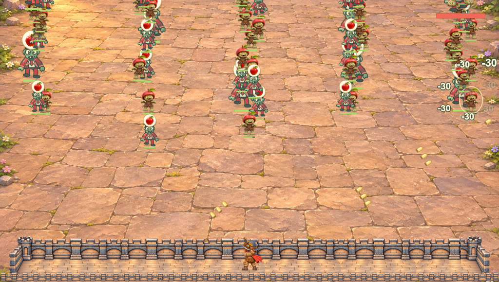
ipad-grand-winding.png
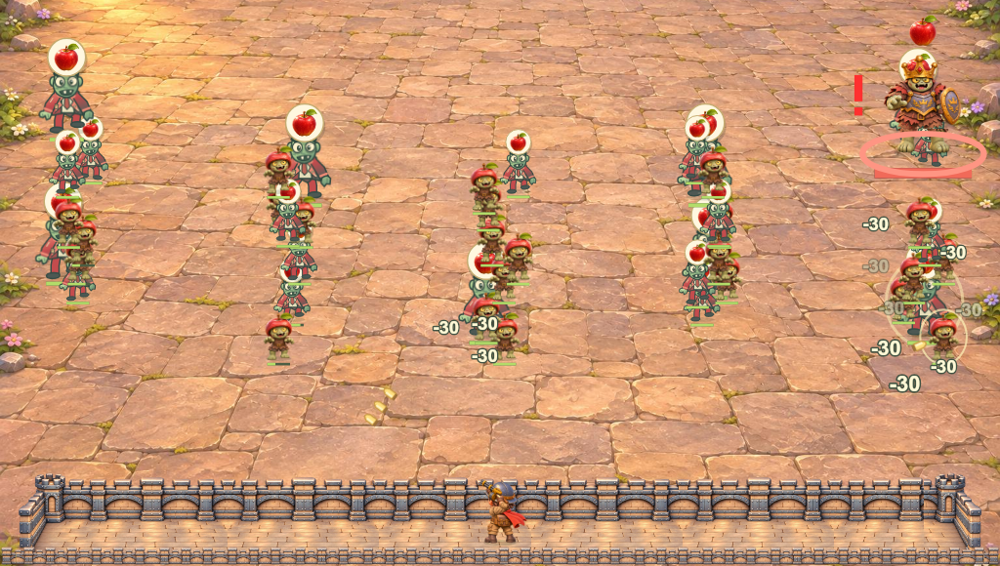
ipad-grand-shockwave.png
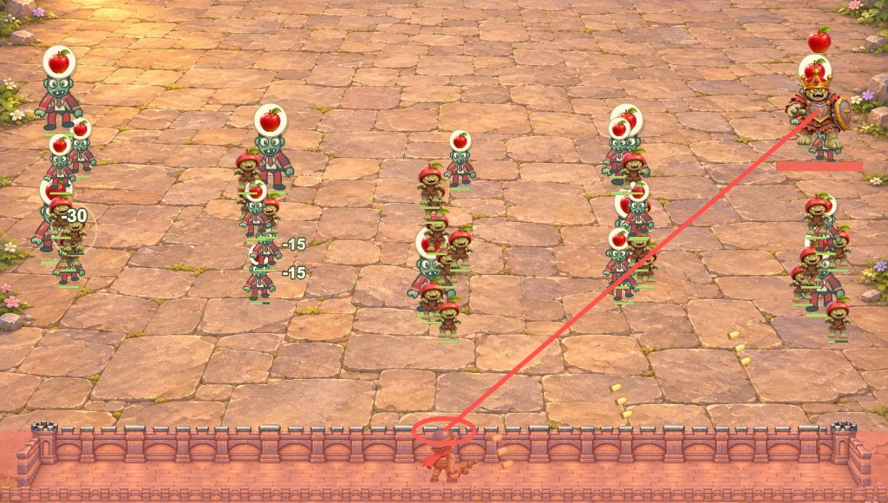
ipad-grand-attackingBase.png
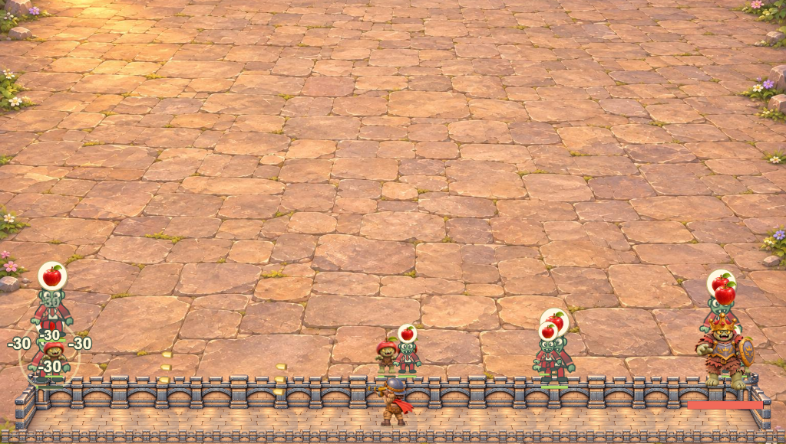